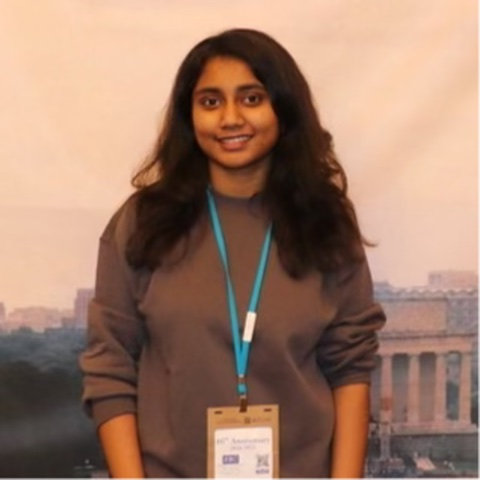

Dharani Nadendla
Ph.D. Student in Computer Science
University of Maryland, Baltimore County (UMBC)
Advised by Dr. Manas Gaur in the Knowledge-infused AI and Inference (KAI²) Lab
My research focuses on consistency in multi-agent large language model (LLM) systems: formally defining consistency across interacting agents, identifying the root causes of inconsistency, and developing metrics and benchmarks to evaluate it.
About me
I am a Ph.D. student in Computer Science at UMBC. My research focuses on the Consistency of large language models (LLMs), with an emphasis on multi-agent LLM systems. Read more about my research.
Research interests
-
Consistency in LLMs
Characterizing when and why LLMs produce inconsistent outputs for semantically equivalent inputs, and developing metrics and benchmarks to evaluate consistency. I am also interested in knowledge-infused learning, which grounds models in structured, external knowledge.
-
Multi-agent LLM systems
Systems in which multiple LLM agents coordinate, debate, or delegate tasks, and how inconsistency arises across interacting agents and carries through to the system's final output.
News
Started my Ph.D. in Computer Science at UMBC, and began serving as a Graduate Teaching Assistant.
Completed my M.P.S. in Data Science at UMBC.
Two papers, EchoGuard and Ultrasound Watermark, accepted to the 9th ACM/IEEE Workshop on Security and Privacy in Edge Computing (EdgeSP 2026), co-located with the ACM/IEEE Symposium on Edge Computing (SEC 2026).
Joined the UMBC Graduate Student Association as Student Affairs Senator.
Received the COEIT Best Poster Award at the UMBC Annual Research Symposium.
Started as a Graduate Research Assistant at UMBC.
Served as a student volunteer at the ACM/IEEE Symposium on Edge Computing (SEC 2025) in Washington, D.C.
Our preprint MASCOT, a curated dataset for analyzing malware evolution, is on arXiv.
Selected publications
All publications-
EchoGuard: Continuous Ultrasound-Based Human Presence Verification for AI Agent Detections
9th ACM/IEEE Workshop on Security and Privacy in Edge Computing (EdgeSP 2026), co-located with the ACM/IEEE Symposium on Edge Computing (SEC 2026), October 2026
-
MASCOT: Analyzing Malware Evolution Through a Well-Curated Source Code Dataset
arXiv preprint arXiv:2512.00741, November 2025
Equal contribution.
Contact
I'm glad to hear from researchers and students interested in LLM consistency and multi-agent LLM systems.